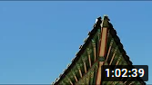
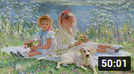
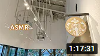

Big Buck Bunny Big Buck Bunny Big Buck Bunny Big Buck Bunny Big Buck Bunny Big Buck Bunny Big Buck Bunny
Big Buck Bunny Big Buck Bunny Big Buck Bunny Big Buck Bunny Big Buck Bunny
1M views 1 month ago
mjungpp1M subscribers
Up next

ASMR더 나은 미래를 위해, 성균관 유생들의 공부 I 공부할때 듣는 asmr • 조선시대, 사극, 동양풍 asmr
yuza asmr80만회

[𝐩𝐥𝐚𝐲𝐥𝐢𝐬𝐭] 수채화처럼 온 몸에 따스히 번지는 나의 봄
때껄룩ᴛᴀᴋᴇ ᴀ ʟᴏᴏᴋ26만회

ASMR이어폰 꽂는 순간 카페●하쿠바 스타벅스 입체음향 | Hakuba Starbucks Cafe Binaural Sounds for Study & Concentration
asmr soupe15만회